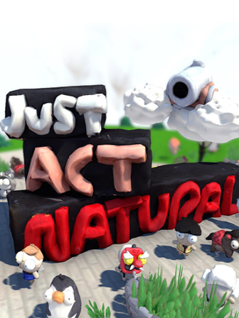

Just Act Natural
Just Act Natural
Details
|  | |
| Playtime | 57m 0s |
| Last Activity | 2022-11-20 23:43:40 |
| Added | 2023-08-11 0:29:07 |
| Modified | 2023-08-11 0:46:59 |
| Completion Status | Played |
| Library | Steam |
| Source | Steam |
| Platform | PC (Windows) |
| Release Date | 2021-05-18 |
| Community Score | |
| Critic Score | |
| User Score | |
| Genre | Arcade Indie Tactical |
| Developer | Bolt in Bolt |
| Publisher | |
| Feature | Multiplayer |
| Links | Steam Official Twitch Discord |
| Tag | |
Description


Just Act Natural is a crazy online multiplayer party game full of deception. Compete against your friends in a continuously expanding pool of game modes and stages. Our take on the party game genre requires you to be as deceitful as possible. Fool your friends, don't act sus, just act natural.


- Asymmetric online multiplayer for up to eight players
Grab your friends for a night of round based party gaming shenanigans! Switch roles from hider to seeker and choose from a wild mixture of different game modes. Find out who acts the most sus.
- Everything's handmade! (yes, really, everything)
Everything is hand sculpted out of clay and photographically scanned into the game. This adds a unique aesthetic to the game and provides something fresh to the party-game genre. - Power Ups and Items
Both roles have a collection of items to choose from at the start of the game. You can use these to help hide yourself as a Hider or help find the other players as the Seeker. Keep track of who has used what item and use this to your advantage to win the round. - Original soundtrack
The Just Act Natural soundtrack is unique too! Composed by Matthew Rock.

- Where is this Discord server?
https://discord.gg/X7BcZUDhzc - What's the difference between the Free and Premium Versions?
The Premium Version of Just Act Natural includes 3 additional game modes and 3 new maps. The premium version also gets you all future maps and game modes that will be added to the game during the next few months :) - Can I play the game alone?
This game is strictly online multiplayer only. It does require at least two people to play. While we do have a match-making system, the game is very indie and the player base is small. We welcome you to our Discord server where you can find other players (or devs) to play with! - Why doesn't father love me?
I’m not sure.